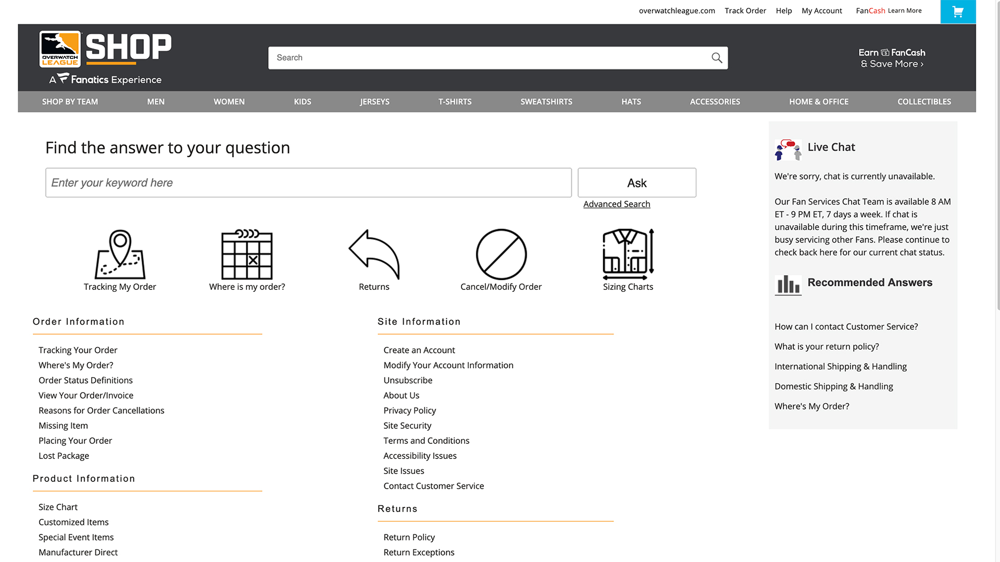

<div id="portfolio-page" class="portfolio-page-content">
    <div class="container">
        <div class="portfolio-nav">
            <div id="portfolio-close-button" class="portfolio-close-button">
                <a href="#portfolio"><i class="fa fa-close"></i></a>
            </div>
        </div>

        <div class="portfolio-title">
            <h1>Oracle Cloud Service - Overwatch League - Help Desk portal site - Fanatics, Inc</h1>
        </div>

        <div class="row">
            <div class="col-sm-7 col-md-7 portfolio-block">
                
                <div class="portfolio-page-image">
                    
                </div>
               

               
            </div>

            <div class="col-sm-5 col-md-5 portfolio-block">
                <!-- Project Description -->
                <div class="block-title">
                    <h3>Description</h3>
                </div>
                <ul class="project-general-info">
                        <i class="fa fa-user">Terry Smith @ Fanatics Inc.</i>
                    <li><p><i class="fa fa-globe"></i> <a href="https://shop-overwatchleague.custhelp.com/" target="_blank">Oracle Cloud Service - Ovwerwatch League Help Desk portal site - Fanatics, Inc</a></p></li>
                    <li><p><i class="fa fa-calendar"></i>2006 - 2013</p></li>
                </ul>

                <p class="text-justify">All of the fanatics ecommerce sites help desk sites are supported by Oracle Service Now Cloud - help desk portal - a php html/CSS Javascript jQuery framework. As the sole developer on this project:
                    <ul>
                       <li>Setup and deployed help desk sites for all major league ecom sites that were ADA compliant, navigation sync-ed and themed for seamless integration for ascetics, customer satisfaction and order conversion.</li>
                        <li>Created Jersey Guarantee forms for user return and refunding.</li>
                        <li>Created Businness Analysis reports to track order delays and site usage reports</li>
                    </ul>   
                </p>
               
                <!-- /Project Description -->

                <!-- Technology -->
                <div class="tags-block">
                    <div class="block-title">
                        <h3>Technology</h3>
                    </div>
                    <ul class="tags">
                        <li><a>HTML</a></li>
                        <li><a>PHP</a></li>
                        <li><a>CSS3</a></li>
                        <li><a>Oracle Cloud Service</a></li>
                        <li><a>jQuery</a></li>
                        <li><a>Javascript</a></li>    
                    </ul>
                </div>
                <!-- /Technology -->
            </div>
        </div>
    </div>
</div>
